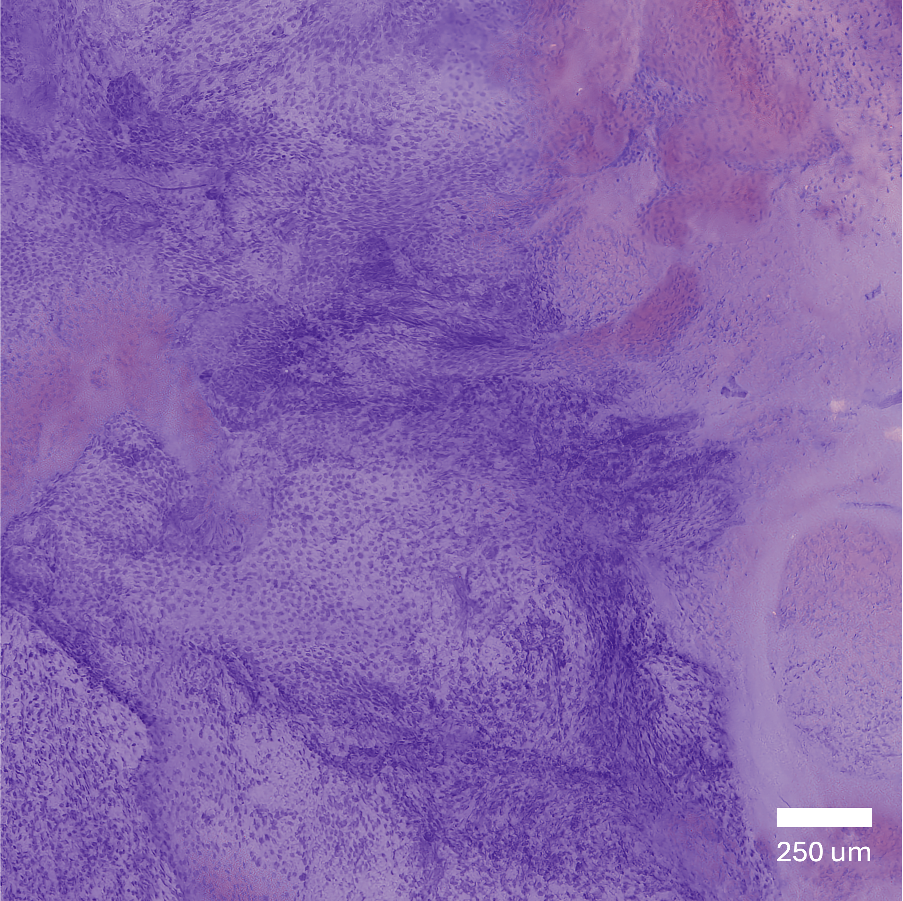
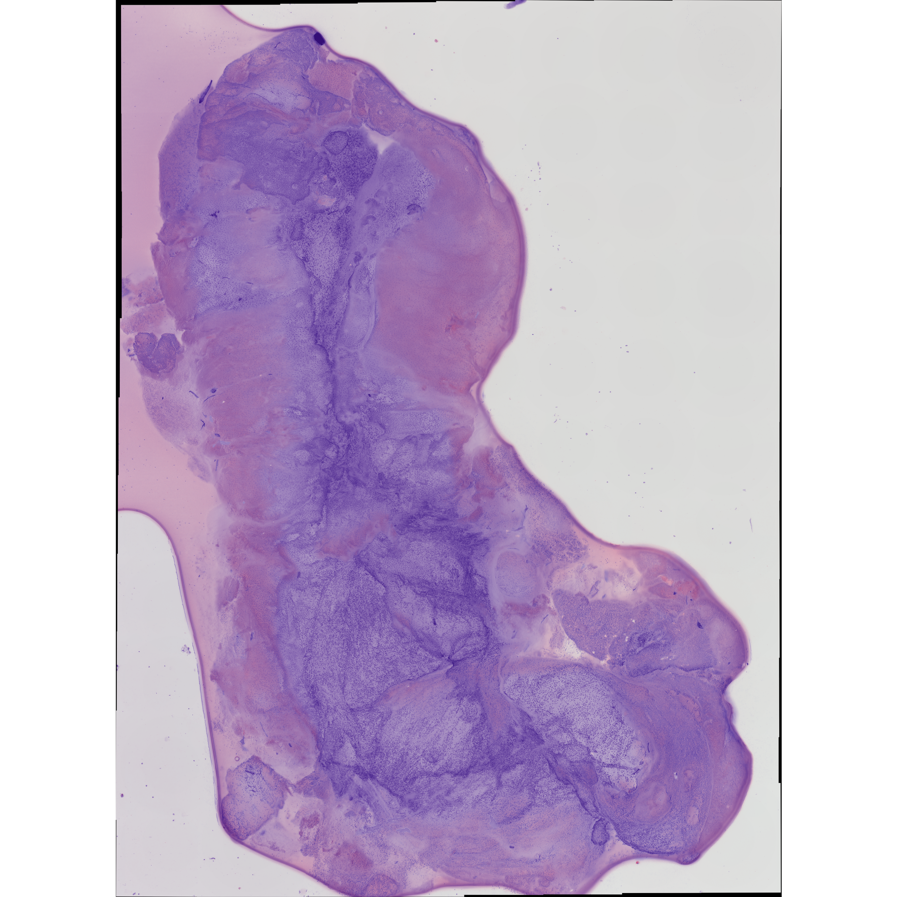
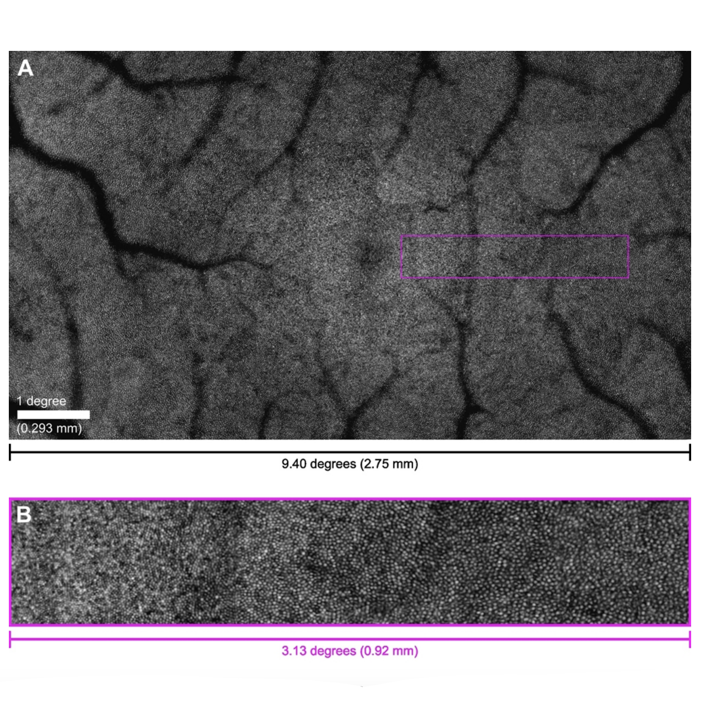
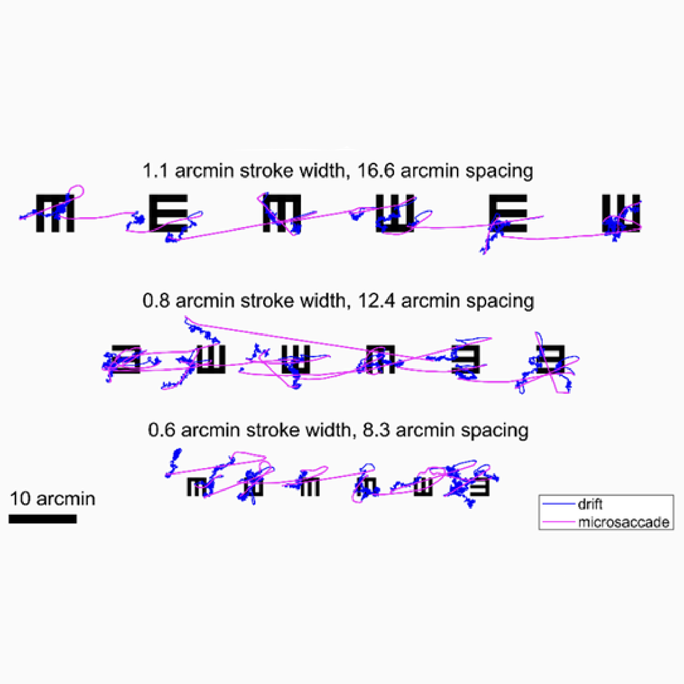

|
Angelina Yang I’m a 3rd year Electrical and Computer Engineering PhD candidate at Rice University in the Computational Imaging Lab, advised by Dr. Ashok Veeraraghavan. I find great satisfaction in delivering intelligent systems that address problems that traditional imaging pipelines struggle with. With a background in optical engineering and machine learning, I’m currently building end-to-end optimized, extended depth-of-field microscopes for low-cost cancer histopathology. I received my B.S. in Optical Engineering with a minor in Computer Science at the University of Rochester, where I was a student researcher at the Active Perception Lab advised by Dr. Jannick Rolland and Dr. Michele Rucci. |

|
Research interests:Computational imaging, optical engineering, artificial intelligence, end-to-end optimization, microscopy. |
|
  |
MiniDeepDOF: Compact Extended Depth-of-Field Microscopy for Slide-Free Histopathology in Low Resource Clinical Settings
Angelina Yang, Gabriela Rincón, Jimin Wu, Huayu Hou, Cheima Hicheri, Bakai Sheyitov, Argaja Shende, Jenny Plante, Richard Schwarz, Daniel Rosen, Mila Salcedo, Kathleen Schmeler, Ann M. Gillenwater, Rebecca R. Richards-Kortum, Ashok Veeraraghavan HMRDHI Industry Day, 2026 MiniDeepDOF is a compact, portable implementation of an extended depth-of-field microscope with deep UV surface excitation for slide-free histology. It enables rapid, direct examination of freshly resected tissue using fluorescence dyes for clinically relevant anatomic features This eliminates the need for resource-intensive slide preparation. The new prototype performed cervical biopsy imaging at Hospital Central de Maputo in Mozambique, demonstrating its potential to expand access to histopathology in low-resource clinical settings. |
|
  |
High refresh rate display for natural monocular viewing in AOSLO psychophysics experiments
Benjamin Moon, Glory Linebach, Angelina Yang, Samantha K. Jenks, Michele Rucci, Martina Poletti, Jannick P. Rolland Optics Express, 2024 Optics Express / bibtex By combining an external display operating at 360 frames per second with an adaptive optics scanning laser ophthalmoscope (AOSLO) for human foveal imaging, we demonstrate color stimulus delivery at high spatial and temporal resolution in AOSLO psychophysics experiments. This high refresh rate display overcomes the temporal, spectral, and field of view limitations of AOSLO-based stimulus presentation, enabling natural monocular viewing of stimuli in psychophysics experiments conducted with AOSLO. |
|
Website template source code from Jon Barron. |